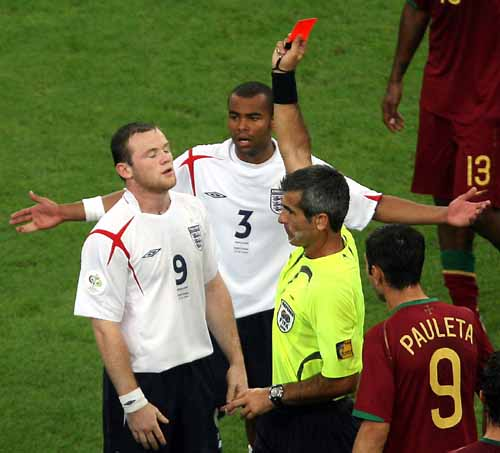

英格兰的死亡，从来都很莎士比亚，就像那麦克白，从一开始就注定了宿命的结局。“东道主，出来混，都要还！”里并不神奇地说了最无聊的话：“神奇的乌鸦已经宣布“英巴将相遇半决赛
”，没有了最无耻的政治，乌鸦仍会神奇。”但最终的结局显然不单单为了那乌鸦，当一个已被淘汰的阿根廷人执法英格兰的生死之战，宿命的结局就有了双重的黑色。
且不说葡萄牙60多分钟的11对10表现得如何恶劣，看着那白色宿命地走向黑色的结局，一切都那么莎士比亚，英国人莎士比亚地死去继续着已经传统的轨迹。而那八年里红牌的轮回，在这白色的黑色宿命中，已成了一个重要得不再重要的情节，这情节无非重复着这样老掉牙的故事：最值得期待的往往就是毒药，1998年的贝壳、2006年的鲁尼，同一曼联生出的果子，有着相同的黑色基因，重复着一个相同情节的故事，连最后相同地死于点球都一模一样，看来命运之神也是很懒惰的。
阿根廷人被东道主杀死，然后用最后的子弹把他们的最大死敌拉下来陪葬，世界终于合理了。至于被陪葬的英格兰，继续着他们的莎士比亚情结，大概只有这样的民族，才会出现最伟大的戏剧天才。在希望中宿命地死去、最美一刻突然陨落，一切戏剧性的老套故事，依然会继续。戏如人生，性格决定命运，这些无聊的论断，在这老套故事的无尽循环中苍白了。